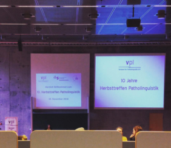
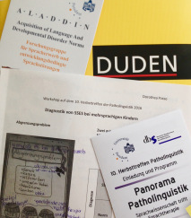

Waking up at 6 a.m. on a Saturday, dressing up to step out in a freezing morning of November, grabbing quickly a double espresso and hopping on a train… only motivated to attend the 10th Herbsttreffen Patholinguistik, an annual event about research on neurology, methods, and therapy of various speech-language impairments (e.g., dyslexia, aphasia, dysphagia, specific language impairment) which takes place at Campus Griebnitzsee of Potsdam University, Germany. This year’s theme was “Linguistics meets speech-language therapy”, covered in talks, posters, workshops, and a photo exhibition.
Workshop
I attended the workshop “Diagnosis of specific language impairment (SLI) in multilingual children” held by the speech-language therapist Dorothea Posse. SLI is a disorder in which a child doesn’t develop language typically, although the overall development is normal, so the language problems aren’t due to physical impairments of the speech apparatus, IQ, hearing loss, brain damage, or developmental disorders (e.g., ASD*).
It can be tricky to identify SLI in the beginning, because children obviously would make mistakes in the process of learning a language, like in any other skill. The most common errors (in German) are in marking gender (e.g., he instead of she) and case (e.g., him/his), subject-verb agreement (e.g., he eat), use of auxiliary verbs (e.g., have finished), irregular verbs (e.g., eated instead of ate), prepositions, and a limited vocabulary (using more general terms than specific words). If the child makes some errors consistently for a long time, at school age or after the age by which she is supposed to have learned the specific grammar rules, and generally speaks in short, simple sentences, these could be clinical markers for SLI.
But not all children who regularly make these errors have SLI. These problems are very common in normal bilingual acquisition, when the two languages have different structures (e.g., word order is SVO in English but SOV in Turkish; the verb run is irregular in English, but regular in German). Actually, if you’re adult learning a foreign language you probably make the same errors, so in this you’re like a big baby trying to acquire language (again). Language errors in mono-/multilingual children can also be due to environmental factors, e.g., if at home the parents speaks incorrectly, or if children don’t get enough language input in kindergarten. In these two cases, the problems can be solved with qualitative language training (e.g. talking/reading more to the child, correcting his errors instantly), therapy is not necessary.
However, SLI requires speech-language therapy. In diagnosing SLI, there are two possible misdiagnoses: missed identity (when the diagnosis is normal, but the child actually has SLI) and mistaken identity (when the child is diagnosed with SLI, but actually his language is normal). Bilingual children who learn the two languages simultaneously acquire them by the same pattern as monolingual children, so don’t worry, the second language doesn’t take over the first one, all languages share the cognitive resources.

The assessment of SLI in multilingual children (usually between 3 and 7 years old) includes first an interview with the parents and caregivers about the age of the first spoken words in each language, the environment, time, quality and quality of the languages that the child is exposed to, family history of language impairments or disorders. The second part is a language test for the child which evaluates the comprehension of the meaning of verbs, wh-questions, negations, picture stories testing the use of relative clauses, subject-verb-agreement, word classes, and case marking. The results on the test are compared with the means for typically developed bilingual children. If the child underscored significantly on more than two parts of the test, SLI is diagnosed.
Poster session
Later in the poster session of the conference I learned about a study by G. Bruno, F. Adani, and R. Lassotta who investigated the comorbidity of ASD and LI. Children with typical development, with SLI and with ASD with/without LI were shown pictures of three animals (e.g., a deer tickling a frog tickling another deer) and were asked to identify one of the animals, either in subject relative clauses (SRC, e.g., Wo ist das Reh, das den Frosch kitzelt? / Where is the deer that tickles the frog?) or in object relative clauses (ORC, e.g., Wo ist das Reh, das der Frosch kitzelt? / Where is the deer that the frog tickles?) by pressing a red button (left animal) or blue button (right animal). ORC are more difficult and are processed slower than SRC, because they require more working memory to mentally rearrange the subject and object in the language specific word order. Their results showed that children with ASD and LI answered only ~20% of ORC correctly, compared to children with ASD without LI who answered ~90%. This suggests that ASD alone is not responsible for language difficulties, but LI is. (As a side note, the poster won the first prize at the conference and actually inspired a group project I did for a uni course a couple of months later 🙂 )
Bibliography recommended by Dorothea Posse:
- Armon-Lotem, S. & de Jong, J. (2015). Assessing multilingual children: Disentangling Bilingualism from Language Impairment (Vol. 13). Multilingual Matters.
- Grimm, A. & Schulz, P. (2014). Specific language impairment and second language acquisition: The risk of over- and underdiagnosis. Child Indicators Research, 7(4), 821-841.
- Rothweiler, M., Chilla, S., & Clahsen, H. (2012). Subject-verb agreement in specific language impairment: A study of monolingual and bilingual German-speaking children. Bilingualism: Language and Cognition, 15(1), 39-57.
- Snippe, K. (2015). Autismus: Wege in die Sprache. Schulz-Kirchner.